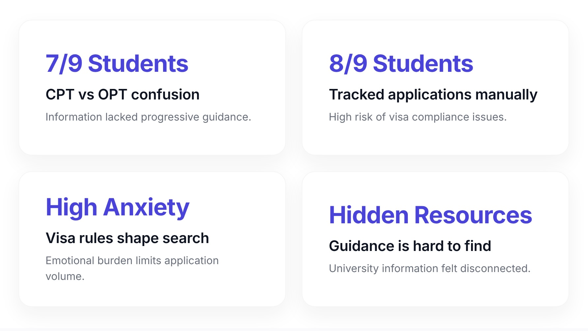
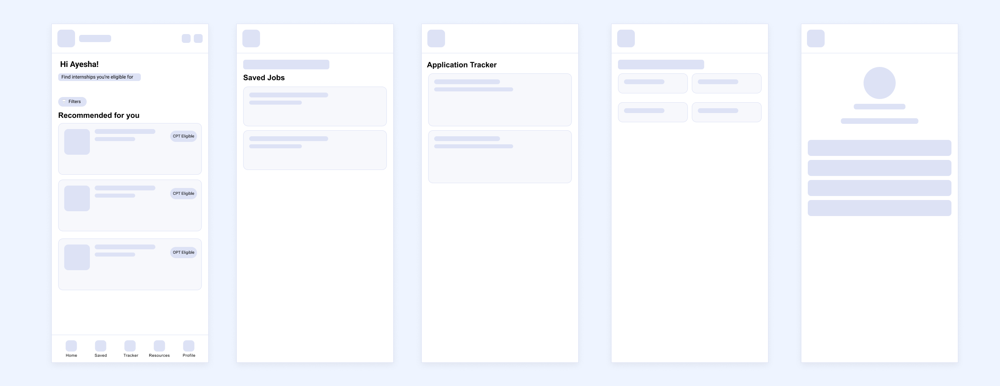
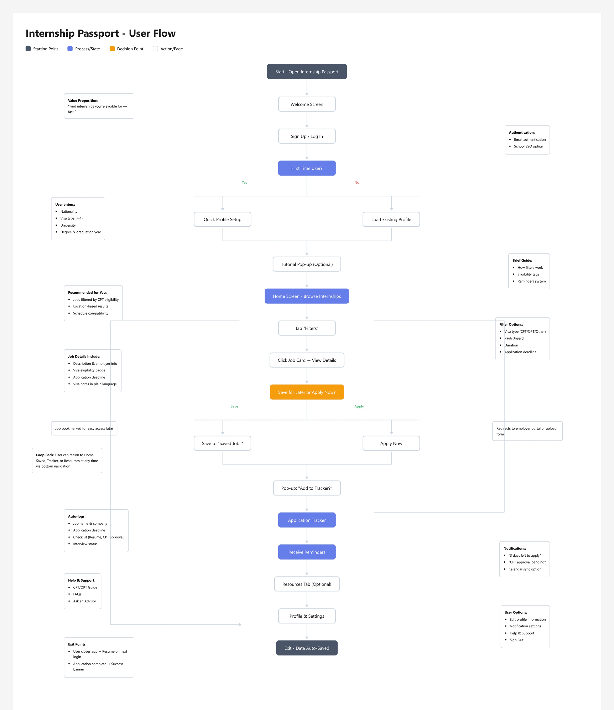
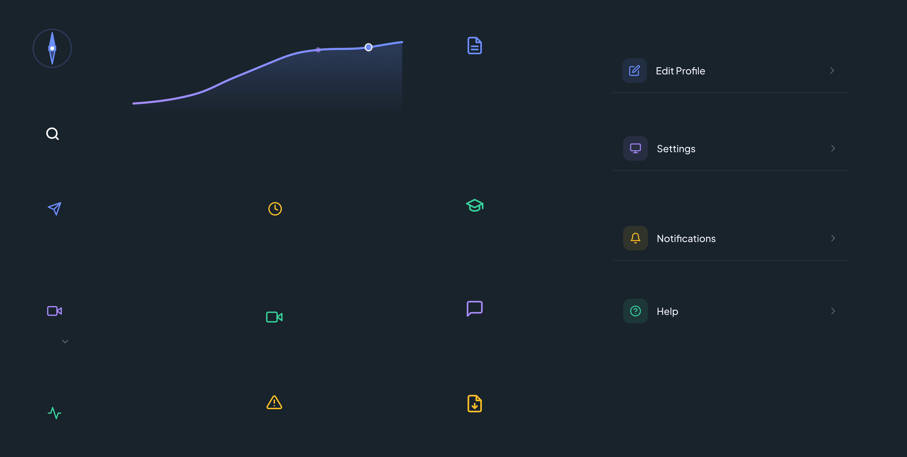
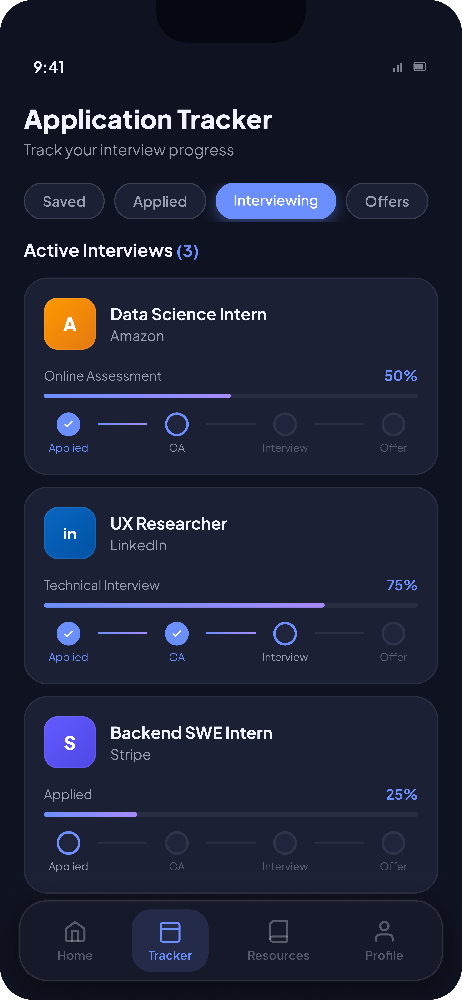
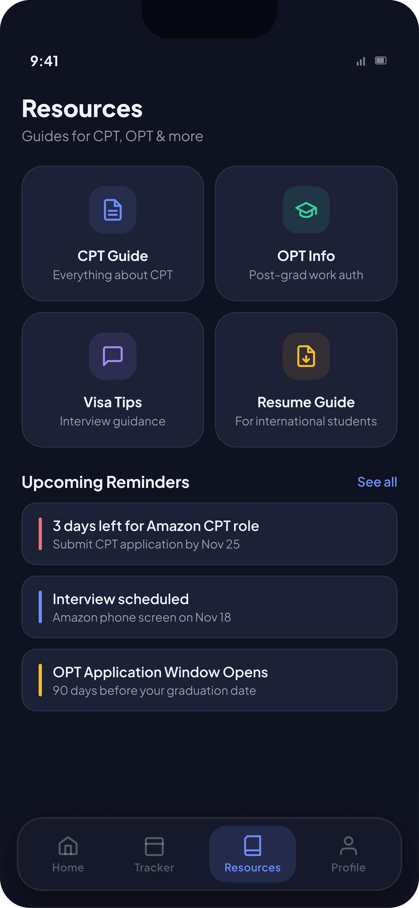
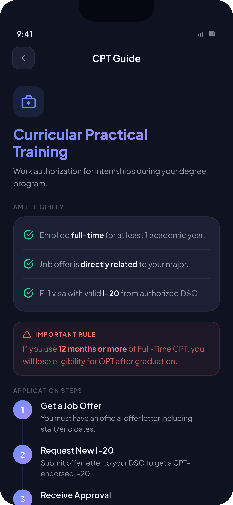
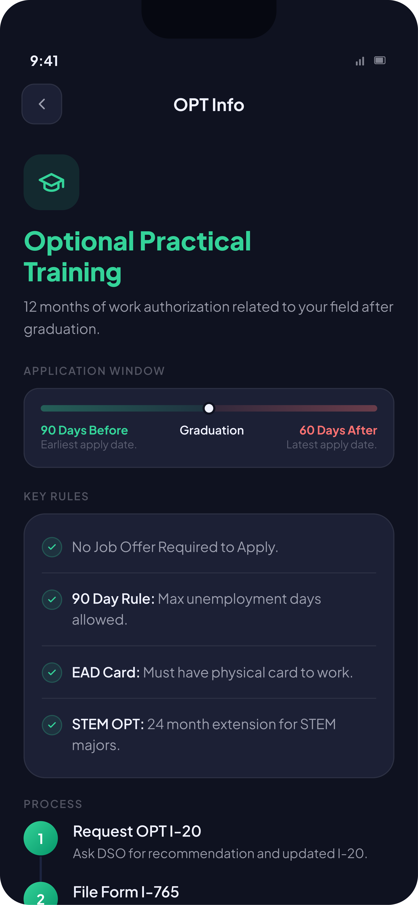
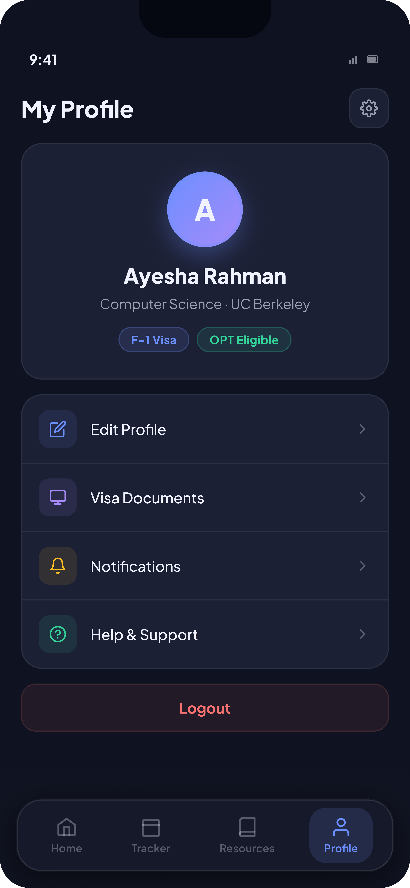

Introduction
For international students arriving in the United States, the excitement of a new academic chapter often comes packaged with a quiet, persistent anxiety, particularly around the question of working legally. The path to an internship is not just about writing a strong resume or nailing an interview. It involves understanding visa categories, deciphering the difference between CPT and OPT, knowing exactly when to apply for authorization, and making sure every step aligns with immigration regulations. Miss a deadline, misunderstand a rule, or miss a resource buried on your university's DSO webpage, and the consequences can be serious.
What makes this harder is how scattered the information is. A student might find general internship listings on LinkedIn, visa policy summaries on their university's international student office website, application tracking in a spreadsheet they built themselves, and answers to nuanced questions buried in Reddit threads. None of these sources talk to each other. None of them were built with international students in mind.
Internship Passport was designed to change that. The goal was to build a single, cohesive platform where international students could search for internships, understand their eligibility, track their applications, and learn about CPT and OPT — all without having to piece together information from five different tabs. The central challenge of this project was not just organizing information, but making something that genuinely reduced the anxiety that comes with navigating a high-stakes, unfamiliar system.
My Role
This was an independent class project. I was responsible for every phase, from initial research and competitive analysis to information architecture, prototyping, usability testing, and final UI design. I gathered feedback from peers and my professor at key checkpoints, and conducted user interviews and usability sessions directly with international students on campus. The project ran for approximately ten weeks, from September through November.
The Existing Landscape
Before sketching a single screen, I wanted to understand what students were already using and where those tools were falling short. I spent time observing conversations on international student Facebook groups and subreddits, and I dug into the features of four platforms that consistently came up in those discussions. Each had value, but each left clear gaps.
The default starting point for most students entering the internship search. Its job listings are extensive, and the ability to see alumni connections at target companies is genuinely useful. But LinkedIn was not designed with international students in mind. There is no way to filter for visa-friendly roles, no guidance on what authorization you need before applying, and no indication of whether a company has ever worked with CPT/OPT candidates. For an international student who does not yet know which companies to approach, LinkedIn can feel like standing in a very large room with no signs.
Handshake
A step closer to the right audience — it lives within the university ecosystem and is often connected to a school's career center. Postings sometimes flag openness to international candidates, which is a meaningful signal. But Handshake still does not explain what CPT or OPT actually is, and the experience varies wildly depending on which university you attend. The resources are inconsistent, and nothing on the platform addresses the compliance side of the internship process.
University Career Portals
These tend to hold the most accurate, school-specific guidance on work authorization, but they are often clunky to navigate and difficult to discover. Important information gets buried in PDFs, and students who are new to the system may not even know what questions to ask. These portals feel like institutional document libraries more than tools built for a student's actual journey.
Reddit & Online Forums
Where students often end up when none of the above gives them a clear answer. Threads about CPT and OPT receive dozens of replies, but those replies are inconsistent, sometimes outdated, and impossible to verify. There is real community here — but the format is not built for reliable, actionable guidance. You can find answers, but you can't trust them.
User Research
To move beyond assumptions, I conducted interviews with nine international students — a mix of undergraduates and graduate students from different countries and different visa situations. Some were in the early stages of their first U.S. internship search. Others had already completed one or two internships and were navigating the transition from CPT to OPT. I spoke with students in STEM fields and non-STEM fields, since their work authorization timelines and options differ significantly. From these conversations, four consistent themes emerged.

The CPT/OPT Distinction Was Genuinely Confusing
7 of 9 participants could not confidently explain the difference between CPT and OPT without pausing to second-guess themselves. Students understood that both were forms of work authorization, but the specifics — when each applies, how to apply, the difference between full-time and part-time CPT, and how CPT usage can affect OPT eligibility — were murky. The information was out there; it just wasn't presented in a way that built understanding progressively.
Application Tracking Was Improvised and Unreliable
8 of 9 participants were managing internship applications in self-built spreadsheets, notes apps, or — in two cases — purely from memory. Most admitted these systems broke down over time. For international students, where application timing intersects with visa authorization windows, losing track of where an application stands can create real compliance risks, not just inconvenience.
Visa Anxiety Shaped the Entire Search
Several participants described a background anxiety that shaped how they approached the internship search — not just whether they would get an offer, but whether they were even allowed to apply and whether they were inadvertently doing something wrong. This led students to apply to fewer companies and spend disproportionate time re-checking information they had already found. No existing platform was addressing this emotional dimension.
Resources Existed, But Felt Impossible to Find
Every university represented in my interviews had some form of guidance available for international students. But students consistently described these resources as hard to locate, hard to trust, and disconnected from the actual task of applying. One student spent forty-five minutes on her university's international office website looking for a specific form before giving up and emailing her DSO. The information was out there — it just wasn't organized the way students needed it.
Design Principles
These research conversations shaped not just what I built, but how I approached every design decision. The students I spoke with were navigating a high-stakes, unfamiliar system while simultaneously managing coursework, language barriers, and cultural adjustment. The design couldn't add to that burden — it had to actively reduce it. Three principles guided the work from this point forward.
Clarity First
Visa regulations are genuinely complex, but that complexity does not need to be reflected in the interface. Every explanation, label, and piece of guidance should be written for a student encountering this information for the first time — clear, jargon-free, and precise without being overwhelming. If a student has to re-read a sentence twice to understand it, that is a design failure.
Guided Confidence
The goal of the app is not just to provide information, but to help students feel capable of acting on it. That means structuring the experience so each step forward feels manageable, presenting eligibility information proactively rather than making students hunt for it, and designing interactions that acknowledge the stakes without amplifying the anxiety. The app should feel like a knowledgeable friend, not an official form.
Low Cognitive Load
Complex processes — CPT authorization, multi-stage applications, eligibility checks — need to be broken into clear, sequential steps. Information should be layered: the most important thing first, with detail available for those who want it. The app should never ask students to hold too much in their heads at once.
Feature Narrative
With these principles as a foundation, I mapped the core features the app would need to deliver. The goal was not just to build a smarter job board, but to create a complete end-to-end experience that guided students from visa eligibility all the way through to application tracking.
-
Onboarding with Visa Status Selection
New users identify their current visa status, field of study, and program end date at the start of their experience. This single input personalizes everything that follows — which CPT/OPT options are relevant to them, which internship filters apply, and what timeline guidance the dashboard surfaces.
-
Internship Search
Filtered listings with the ability to narrow results by visa-friendliness, field, location, and timeline. Unlike a general job board, this search is designed with the international student's constraints at the center — not as an afterthought. The default sort order is Visa Match, not recency.
-
Job Detail Pages
Beyond the standard listing format, each detail page includes a Visa Compatibility Score, a Sponsorship Verified or Sponsorship Unclear badge with an honest explanation of what each means, and practical advice for how to proceed regardless of a company's status.
-
Application Tracker
A single place to log, update, and review every internship a student is pursuing. Entries are organized by stage — Saved, Applied, Interviewing, Offers — with horizontal progress bars that make the current state of each application visible at a glance.
-
CPT/OPT Guide
An in-app resource that explains both authorization types in plain language, walks through the application process step by step, and surfaces relevant deadlines and eligibility checkboxes based on the student's visa status. This was the feature students responded to most strongly in research.
-
Resource Library
A 2×2 card grid organizing guidance into CPT Guide, OPT Info, Visa Tips, and Resume Guide. Below the grid, Upcoming Reminders surfaces time-sensitive actions so students always know what needs their attention without hunting for it.
-
Personalized Dashboard
The app's home base — greeting students by name, surfacing four key stats (applied, interviews, saved, deadlines), a Visa Timeline card with days remaining and an On Track status badge, and an Up Next section showing the most pressing calendar items.
Wireframing
I began wireframing on a whiteboard, mapping the full user flow before committing anything to Figma. I found it easier to see the system as a whole at this stage — where screens connected, where students might get lost, and where information needed to be surfaced earlier than I had initially planned. I worked through at least three versions of the dashboard and the CPT/OPT guide in particular, since those were the screens where information architecture mattered most.
The key tension in the wireframes was between depth and accessibility. The CPT/OPT guide contains genuinely complex information — but if it reads like a government document, students won't engage with it. I experimented with a progressive disclosure model, where the guide opens with a simple overview and lets students drill into specifics as needed. This felt closer to how students described wanting to learn: starting with the big picture, then filling in detail when they needed it. Once the whiteboard flows felt solid, I moved into Figma to build low-fidelity wireframes for every core screen, then refined them into a mid-fidelity prototype ready for usability testing.

User Flow

Style Guide
The visual identity of Internship Passport is anchored in a dark theme — a deliberate choice that sets it apart from the typical light-mode career tools students encounter daily, and one that carries its own meaning. Dark interfaces tend to feel focused, serious, and low-distraction. For an app asking students to engage with compliance timelines and visa rules, that tone felt right. The design system is built around three layers of color: surfaces, accents, and a semantic traffic-light system that lets students read visa compatibility status at a glance.

The background palette is built from deep navy and near-black tones, creating a layered depth that keeps different content areas visually distinct without relying on heavy borders or dividers. The accent color — electric blue (#4A9EFF) — appears in call-to-action buttons, active navigation states, and progress bar fills throughout the tracker. A secondary green accent is used specifically for "Sponsorship Verified" badges, providing an immediate reassuring signal that a company has been confirmed as international-friendly. Amber is reserved for warning states like "Sponsorship Unclear," completing an intuitive traffic-light system students can read instantly. In the CPT and OPT guide screens, key terms and section headings are set in a bright teal-green, creating visual landmarks in otherwise text-heavy content.
Typography is clean and utilitarian, set in a sans-serif system font stack that performs consistently across iOS and Android. The component library is built around dark-surface cards with subtle inner borders, pill-shaped filter tabs for category switching, and horizontal progress bars in the tracker. The bottom navigation bar keeps four destinations persistently accessible — Home, Tracker, Resources, and Profile — labeled and icon-paired so nothing requires guesswork.
Final Product
The final prototype brings together all research, design principles, and usability findings into a cohesive mobile app experience. Below are the key screens from each user journey, from first open to CPT authorization.
Splash Screen & Onboarding


Dashboard (Home)

Internship Search

Job Detail Page

Application Tracker

Resources, CPT Guide & OPT Info



Profile

Personal Reflection
When I started this project, I expected the hardest design challenge to be organizing complex information clearly. That turned out to be the second hardest challenge. The hardest was understanding that for the students who would use this app, the stakes were not just practical — they were deeply personal. Getting CPT authorization wrong, missing a deadline, or misunderstanding eligibility is not a minor inconvenience. It can affect a student's ability to stay in the country they have built their academic life around. Designing for that context required a kind of care that went beyond layout and typography.
What I underestimated going into the research was how much the anxiety dimension would reshape my priorities. I went in thinking the core problem was information architecture. I came out understanding that the core problem was trust — helping students feel confident enough in the information they were receiving to actually act on it. That shift influenced everything from the tone of the copy to the decision to lead the CPT/OPT guide with structured, scannable content rather than a flat wall of topics. It's also why the Job Detail page includes advisory text for Sponsorship Unclear listings rather than simply flagging them as a dead end — students deserve context, not just verdicts.
There is still significant room to grow. The current version relies on manually curated job listings and resources, which would require real infrastructure investment to scale. Integrating with university DSO systems — so that CPT timeline guidance is pulled from actual academic calendars — would make the dashboard dramatically more useful. I also see potential in community features: a space where students can share experiences with specific companies, ask questions, and find one another. The research conversations I had were full of that mutual support. There is something worth designing around that instinct. Most importantly, this project reminded me that the best UX work is not about clever interfaces. It is about genuinely understanding who you are designing for, and having the patience to sit with their experience long enough to feel what they feel.